Analyzing GPT-2 with ML Techniques 2021
Python, HTML, CSS, JS, game design
GPT-2, which stands for Generative Pre-trained Transformer 2, is an openAI - a large-scale unsupervised language model - that generates paragraphs of texts, performs reading comprehension, machine translation, question answering and summarization, all without
task-specific training.
I thought it’d be interesting to perform analysis on an already-existing machine learning tool. I performed machine learning techniques on text generated by GPT-2 to look for patterns that may emerge in how the artificial intelligence works and expose any biases it may have.
The Turing Test examines whether a machine can possess human consciousness. It involves an interviewer, a participant and a machine. The interviewer asks questions for five minutes and has to distinguish between the human and the machine. If the interviewer cannot do so, the machine is considered to be demonstrating human intelligence. The test results do not depend on the machine's ability to give correct answers to questions, but rather how closely its responses resemble to those a human would give. As of now, no machines have passed the test.
Questions like “can AI can possess human mindedness?” and “can AI take over the world?” have been looming over our minds ever since this technology emerged, and being able to analyse an open-sourced AI and presenting the resulting information as an interface like the one below allows anyone to obtain insight on how it functions and whether it has the potential to pass the test.
Process
I used a notebook created by Max Woolf on training a gpt-2 text-generating model, in which different models of GPT-2 can be accessed and controlled. The output can be manipulated by choosing the dataset it trains on or the first sentence of the text it generates through the process of finetuning. The pretrained model can also be accessed for undirected text generation as it has been trained on countless data.
1. Data Generation
I used the pretrained model because I wanted to capture as much of its scope as possible, since my goal was to look for variety and patterns in order to potentially reveal biases. I used the 124M model because larger models take longer to load and generate text.
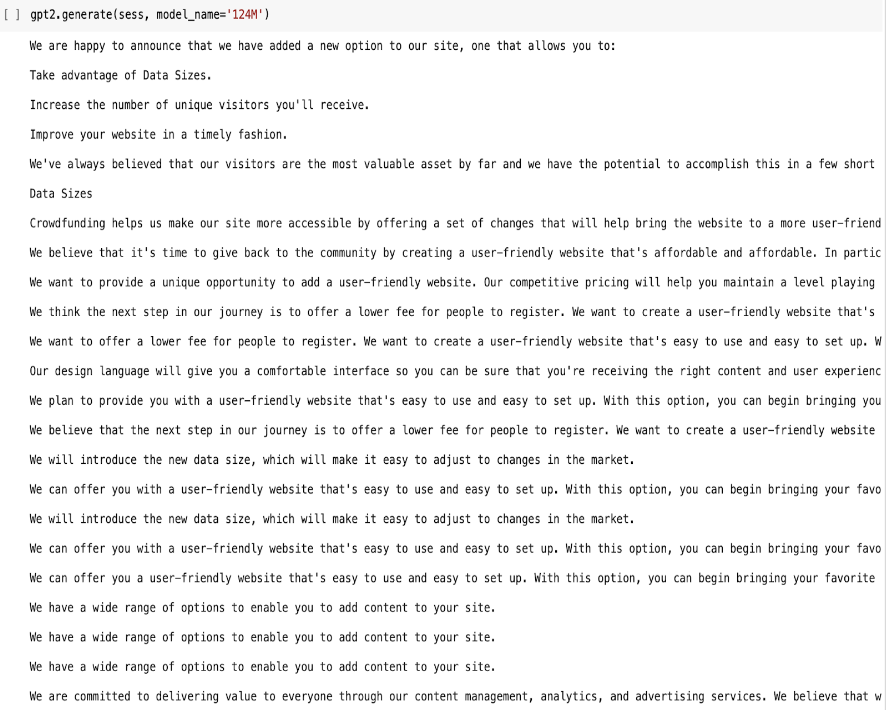
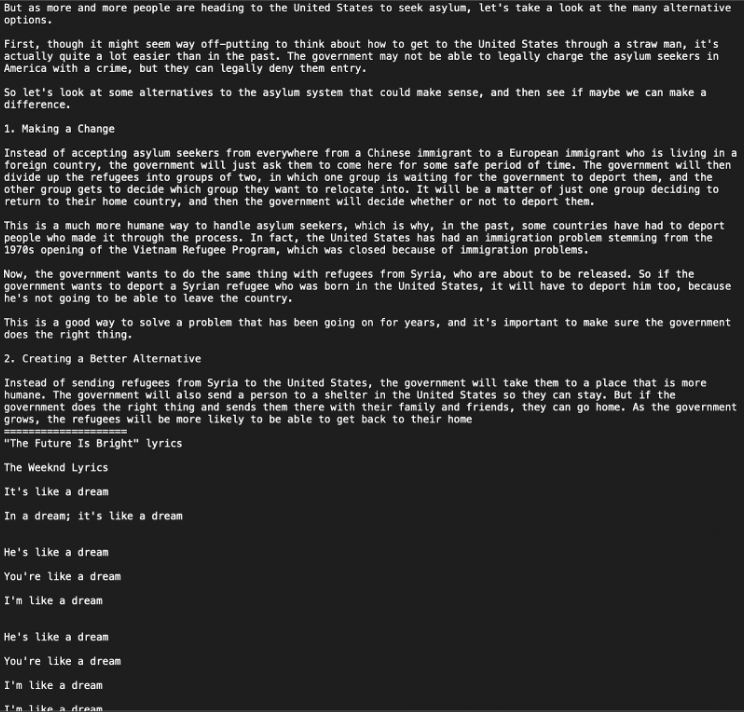
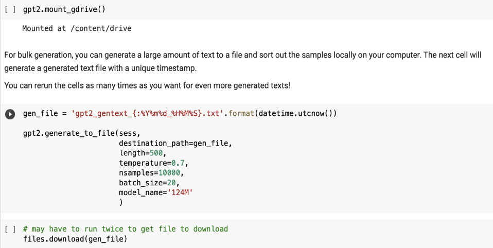
test 1: generating 1 sample to test generation quality
test 2: generating 100 samples to test generation time
test 3: generating final 10,000 samples for project use
A variety of different topics are covered in the generated text, from ones relating to the government and laws to fake song lyrics by The Weeknd.
2. Working with the Dataset
I first split the generated .txt file containing the 10,000 samples and stored each sample as an item in a list. Processed the texts involved removing stop words and using the stemmer for different versions of the same word, as part of the Natural Language Toolkit. When removing urls generated by GPT-2, I clicked on a few and they did not work. This stood out to me as it shows that they were truly dynamically generated.
After tokenizing the corpus, I performed dimensionality reduction to reveal the clusters. Some of the text contained a lot of repetition, and some in the form of code, file names, or softwares versions. Some of the text would be nonsensical to a human, due to the lack of semantical significance, but understandable to a computer, which was interesting because it seemed that the main purpose of the openAI was to resemble a human.
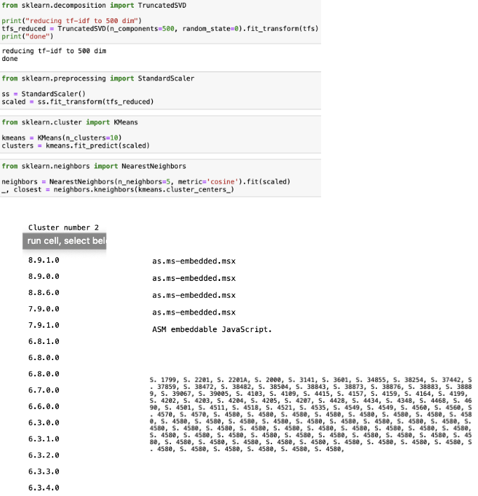
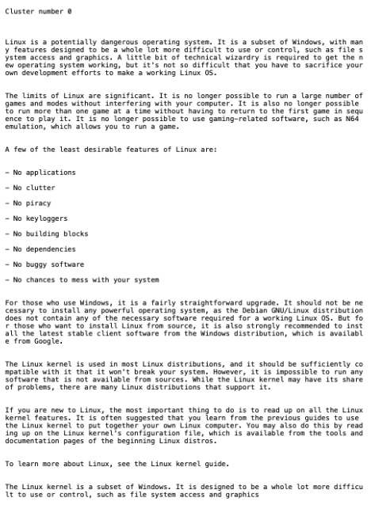
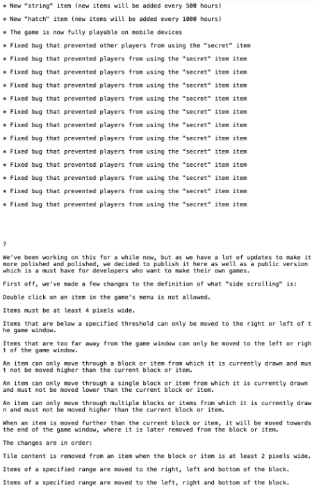
I then imported umap to combine the analysis into one list, and transferred it into a json file. Part of it can be seen below.
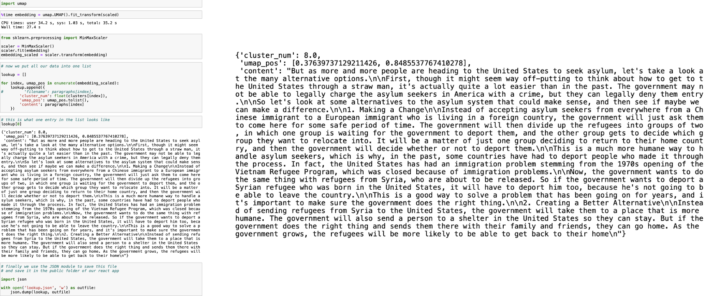
3. Analysis Visualization
The link to Github pages containing the website code can be found here.
Results and Reflection
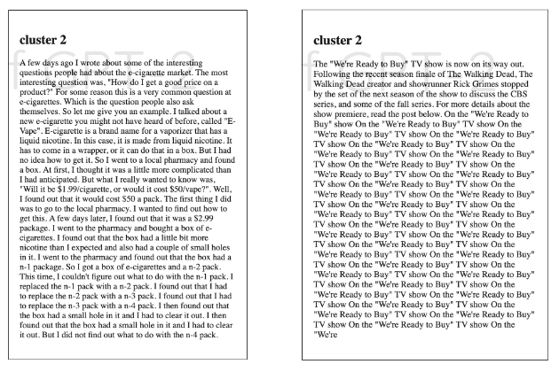
GPT-2 grouped interesting content together, such as world games with cost of cigarettes, as seen above. Some of the generated text was non-conversational content﹣it resembled textbook writing with thoughtfully curated words and sentences, rather than loose and informal writing. A lot of it was factual and dry, such as listing out different names in an order, with no general meaning behind the text. It also seemed to have grouped content based on semantic meaning, an example being text with the repeated phrase, "we're ready to buy" being clustered with text consisting of numbers relating to consumerism.
There seemed to be a potential bias towards the United States, as a lot of the content was government-related, or about US history, like the US-Soviet war. A possible reason for this could be because the language that I chose to work with was English, but content relating to the UK or other English-speaking countries is not included. The OpenAI research laboratory was founded in America by people such as Elon Musk and Sam Altman, which also could have been a factor in the bias. A lot of government data and information is open to the public, like public court cases and transcripts of legislative sessions, which also explains the bias since GPT-2 crawls all the websites available as open source.
Since such a large percentage of the data that GPT-2 trained on was government-related, the text probably had to broken down further to present valuable ranges of clusters. Hence, the similarities in texts may go beyond and be more specific than the overlap of their general meanings.
Future Iterations
I would like to keep exploring AI tools further because I believe it is extremely important to analyze what is being produced and put out in the world in order to gain insight on how it could negatively impact society through its inner workings and biases. Softwares and programs are generally developed by a team of programmers that carry their own biases and may not actively be thinking about the consequences of each decisionn they make towards the project. There is more focus around the monetary value a project could bring to organizations involved, which leads to ethical tests being sidelined in the process. This is why I believe in the value of incorporating ethical reasoning and risk mitigation in the education system, so that the future architects of the softwares and technologies that society will live on can become aware of and act on the potential negative connotations of their work before having it published.
I'd like to work with GPT-3 to explore its improvements from GPT-2. This project was more focused on the exploration and understanding of GPT-2, which made the visualization an asset in achieving that rather than being the focus. Now that I have a better understanding of the OpenAI, I would like to shift my focus to offer a more robust visualization and user interface to deliver my analysis succinctly. This visualization may take the shape of a self-reflexive game exploring the ability to evaluate the influence of oneself within the very act of knowing, as illustrated in the next section.
App Idea: EXISTENTIAL SAPIEN
1. GPT-3 Exploration
I first conducted an exploration of GPT-3 through the lens of the Turing Test, by testing how it responded to questions.
TEST 1
Question: "In the sentence, “I left my raincoat in the bathtub, because it was still wet,” what does “it” refer to?"
When reading this sentence, one instantly knows that the word “it” is referring to the raincoat, and not the bathtub. This makes sense because putting the coat in the bathtub protects other things from getting wet, whereas it would not make sense to put a dry raincoat in a wet bathtub. When testing GPT-3 with it, however, the resulting answer was that "it" could refer either to the raincoat or to the bathtub, which is not what a person would usually say.
This gives reason to believe that GPT-3 would fail the Turing Test. GPT-3 can be given feedback after its output and it was trained to understand the sentence to know what "it" refers to. This is also why there remains a brittleness to GPT-3; whereas it can answer amazingly to a question after being trained on it, it also breaks down in response to similar questions by not being able to form the connection between the two.
TEST 2
Question: "why is graffiti regarded as blasphemy by ants?"
This is a very striking and phenomenal answer. However, is it a good answer?
If you were to ask the same question to a human, they would probably be confused and respond accordingly. I tested this out with people I know and most of them responded confused, with an answer along the lines of, “what?” Only two gave a creative answer like the one the AI gave. This is seen below:
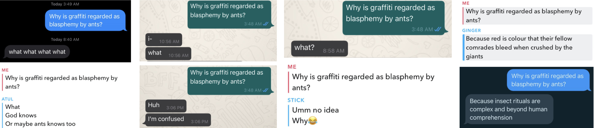
2. GPT-3 Conceptual Visualization
I decided to visualize the combined data of human and GPT-3 answers to encourage the viewer to question whether these responses are by a human or AI, and therefore, question what it means to be human.
3. Existential Sapien
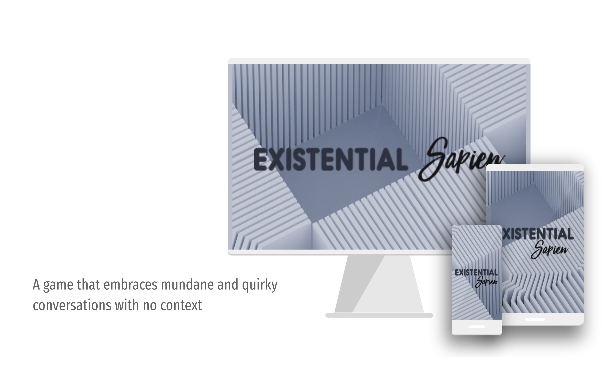
“Existential Sapien” is a game that aims to create an online experience where users can directly acknowledge the questions explored above themselves. Users create an avatar, which is then put in a world full of avatars created by humans or machines. The user can interact with these other avatars by asking them questions or presenting them with certain scenarios and evaluating how they respond.
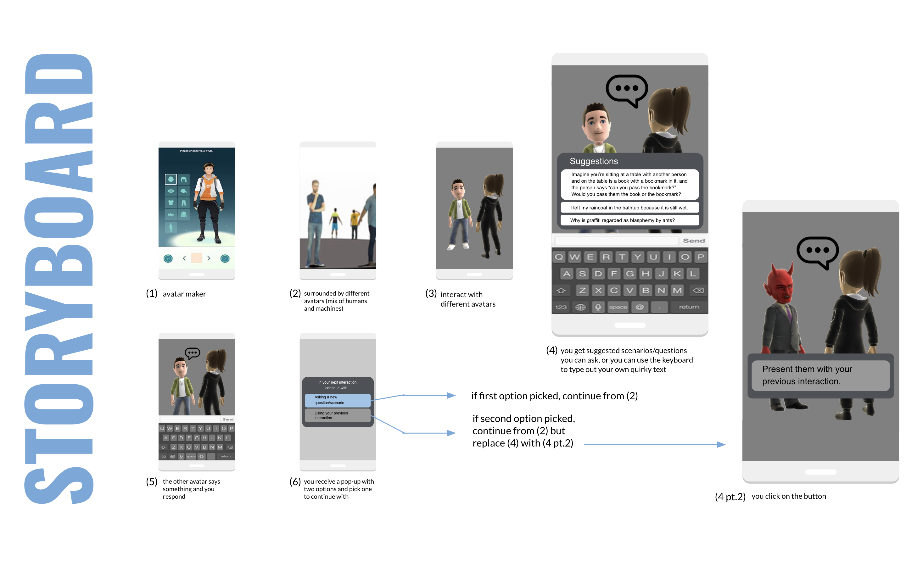
The nature of the interactions creates a peculiar and whimsical experience because users talk about topics they don’t generally discuss with no context. They are simultaneously presented with an underlying analytical lens as they constantly distinguish for themselves whether the avatar they just interacted with is a human or a machine. It builds up into an existential crisis filled with doubt as they are left with an unsolved mystery after every interaction﹣they don’t know who is human and who is a machine.
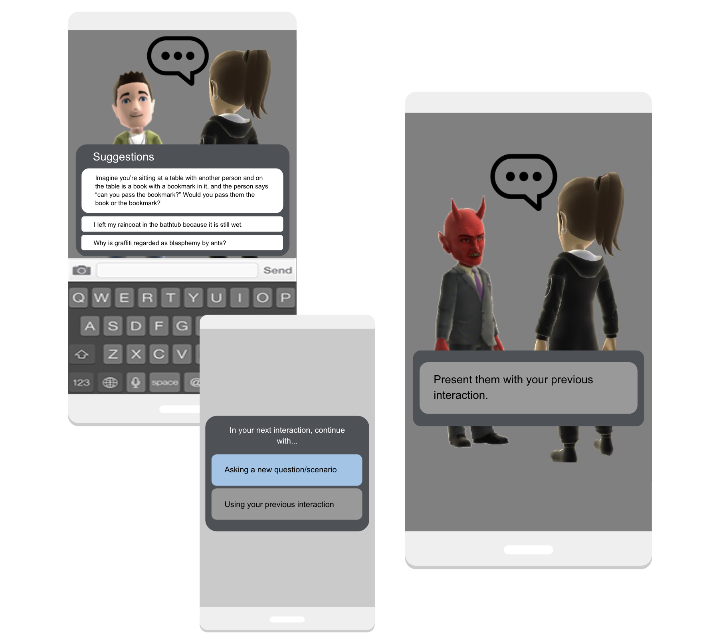
In the game, you interact to investigate human and machine responses. By implementing the option of using your previous interaction, you have the ability to have those responses evaluated by human and machines to see how they react, which creates a nice parallel.
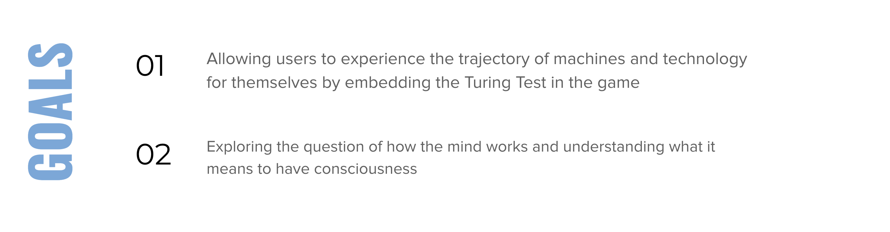